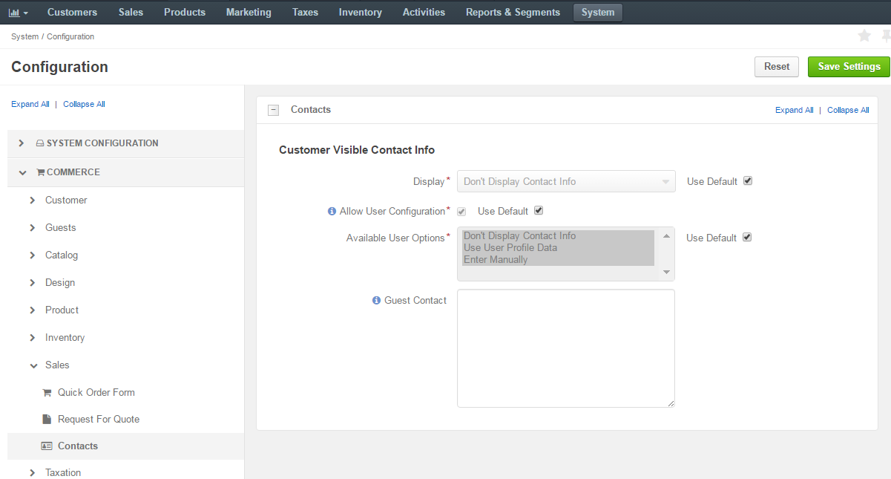
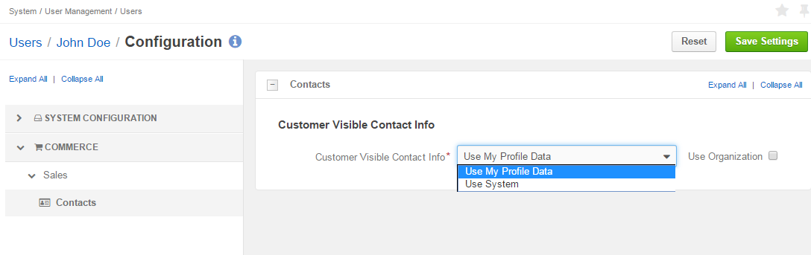
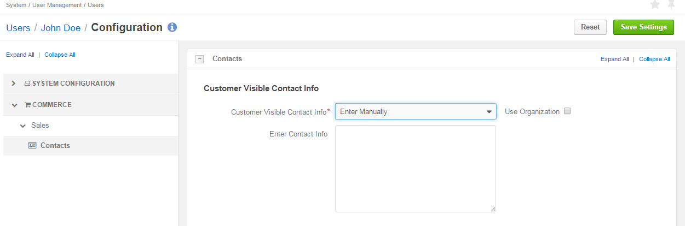
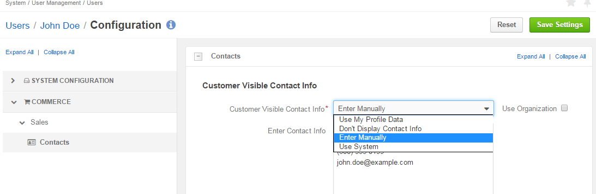

Configure Sales Representative Information¶
To provide customers with the contact information of their primary assigned sales representative, enable the display of the sales rep contact information in the Oro application storefront footer links.
Contact information can be configured on four levels: globally, per organization, per website, per user. Website settings override organization, organization settings override system and user settings may (sometimes) override all other settings, depending on configuration. In these cases, either customer owner or customer user owner may be used as a user settings source.
Based on the level where configuration has taken place, settings can fall back to other levels following the pattern below:
- User settings can fall back either to system or organization settings.
- Website settings can fall back to the system settings.
- Organization settings can fall back to the system settings.
However:
- When Use System check box is enabled, system settings override website or organization.
- When Use Organization check box is enabled, organization settings override system.
With this in mind, we will have a look at how sales representative information is configured at each level.
Configure Sales Rep Information Globally¶
Enabling sales representative information globally sets system settings as default ones.
To enable or disable the display of sales representative information in the storefront footer links globally:
- Navigate to the system configuration (click System > Configuration in the main menu).
- Select Commerce > Sales > Contacts in the menu to the left.
Note
For faster navigation between the configuration menu sections, use Quick Search.
The Customer Visible Contact Info page opens:
Set Display Details¶
In the Display list, select one of the options that will determine what and whose information to show on the website:
- Don’t Display Contact Info - no sales rep information is displayed. This option is the default one.
- Customer User Owner - allow customer user owner information to be displayed.
- Customer Owner - allow customer owner information to be displayed.
Note
User settings override all other settings if Customer Owner or Customer User Owner are selected as a display option.
- Pre-configured - in the Contact Details text field, specify custom contact details you wish to be displayed.
Allow User Configuration¶
Select Available User Options.
Options selected as Available User Options determine what options the user will see in the Customer Visible Contact Info list in their user configuration settings (in My User > My Configuration > Commerce > Sales > Contacts > Customer Visible Contact Info).
The options are the following:
Don’t Display Contact Info – allow setting the option of no sales rep information to be displayed.
If the admin enables the Available User Options check box and sets the Don’t Display Contact Info option, then the user will see Don’t Display Contact Info in their configuration settings.
Note
The user who will be able to see these settings is the one selected in the Display list. User settings apply when either customer user owner or customer owner is selected.
If:

Then:

Use User Profile Data – allow setting the option of user profile details to be displayed.
If the admin enables the Available User Options check box and sets the Use User Profile Data option, then the user will see Use My Profile Data in their configuration settings.
If:

Then:
Enter Manually – allow to set the option of manually entered text in the Enter Contact Info field.
If the admin enables the Available User Options check box and sets the Enter manually option, then the user will see Enter Manually in their configuration settings.
If:

Then:
Note
You can choose to use multiple options by holding Ctrl when selecting the option. When all options are selected in Available User Options, the user will see them all in their configuration settings as well.
If:

Then:

Warning
Please note that Allow User Configuration options define user level settings only.
Provide Guest Contact Details¶
- In the Guest Contact text box, you may enter contact information that will be shown to non-authenticated visitors.
- Click Save Settings.
Configure Sales Rep Information per Organization¶
To enable or disable the display of sales representative information in the storefront footer links per organization:
- Navigate to System > User Management > Organizations in the main menu.
- For the necessary organization, hover over the More Options menu to the right of the necessary organization and click to start editing the configuration.
- Select Commerce > Sales > Contacts in the menu to the left.
Note
For faster navigation between the configuration menu sections, use Quick Search.
Set Display Details¶
In the Display list, select one of the options that will determine what and whose information to show on the website. For options detailed description, see Set Display Options.
Such organization settings override settings set at the system level unless Use System check box is enabled.
Allow User Configuration¶
Select one or more Available User Options.
Such organization settings override settings set at the system level unless Use System check box is enabled.
Provide Guest Contact Details¶
- In the Guest Contact text box, you may enter contact information that will be shown to non-authenticated visitors. Click Use System to use the text configured at the system level.
- Click Save Settings.
Configure Sales Rep Information per Website¶
To enable or disable the display of sales representative information in the storefront footer links per website:
- Navigate to System > Websites in the main menu.
- For the necessary website, hover over the More Options menu to the right of the necessary website and click to start editing the configuration.
- Select Commerce > Sales > Contacts in the menu on the left.
Note
For faster navigation between the configuration menu sections, use Quick Search.
Set Display Details¶
In the Display list, select one of the options that will determine what and whose information to show in the storefront footer links. For options detailed description, see Set Display Options.
Such website settings override settings set at the system level unless Use System check box is enabled.
Provide Guest Contact Details¶
- In the Guest Contact text box, you may enter contact information that will be shown to non-authenticated visitors.
- Click Save Settings.
Configure Sales Rep Information per User¶
Note
User settings override all other settings if Customer Owner or Customer User Owner are selected as a display option.
To locate user configuration settings, navigate to My User > My Configuration and click Commerce > Sales > Contacts in the panel on the left.
Note
For faster navigation between the configuration menu sections, use Quick Search.
In the Customer Visible Contact Info list in their user configuration settings, the user will see the options that are enabled and selected in Available User Options on the system, website or organization levels.
Depending on the configuration, the Customer Visible Contact Info list may include one or more of the following options:
- Don’t Display Contact Info – do not display any sales rep information.
- Enter Manually – display contact information that is manually entered in the Enter Contact Info field.
- Use System – fallback to system settings. The option is available only when the Display setting in the system configuration is set to Pre-Configured.
- Use My Profile Data - display the user profile details as a contact information.
User settings override all other settings only if Customer Owner or Customer User Owner are selected as display options.
Note
To fall back to organization settings, enable the Use Organization check box.
In the Enter Contact Info field, provide custom text to be displayed. This text is used as a contact information only when the Customer Visible Contact Info setting is set to Enter Manually.
Configuration Sample¶
The following configuration example is provided for illustration.
As an administrator, you were asked to set up the ability for a customer sales representative John Doe to provide contact information for non-authenticated and logged in customer users.
To set up information for non-authenticated visitors:
Navigate to System > Configuration > Commerce > Sales > Contacts.
In the Display list, select Customer User Owner.
Note
For faster navigation between the configuration menu sections, use Quick Search.
Enable Allow User Configuration check box, and select all three available user options from the list.
In Guest Contact text field, provide text for non-authenticated users, e.g.:
Please login to get your sales rep information, or contact sales@acme.com
Save the settings.
This information should become available on the website for non-authenticated users.
To set information for logged in users, you need to make sure that in the system configuration, the settings allow John Doe as a customer user owner to enter his contact information manually in his user configuration.
This would allow John Doe to:
Navigate to My User > My Configuration > Commerce > Sales > Contacts.
Select Enter Manually in the Customer Visible Contact Info field.
Provide contact details in Enter Contact Info, e.g.
John Doe, ACME (800) 555-0100 (800) 555-0199 john.doe@example.com

Click Save Settings
The information should become available on the website.